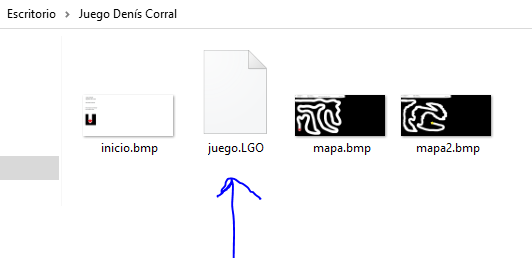
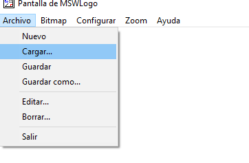
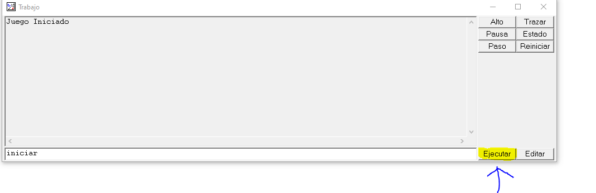
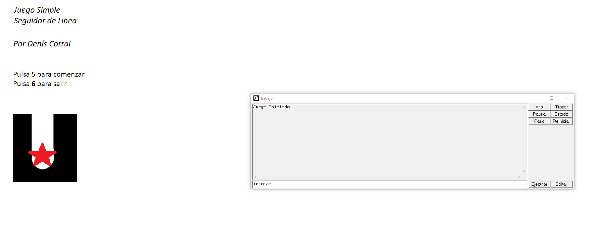

Para comenzar, debemos descargar la carpeta contenedora con los archivos para posteriormente, abrir el archivo terminado en .LGO.
 A continuación, inicia el juego ejecutando el comando "iniciar" en la terminal y presionando el botón "ejecutar" de la app.
ES MUY IMPORTANTE USAR EL EJECUTAR PARA EJECUTAR EL JUEGO, de lo contrario, puede ser que en algunas ocasiones no funcione la tecla enter para poder ejecutar el juego"
